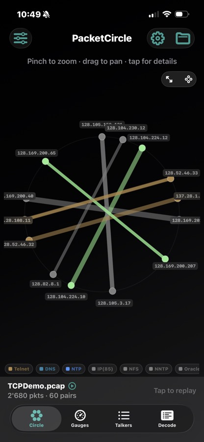
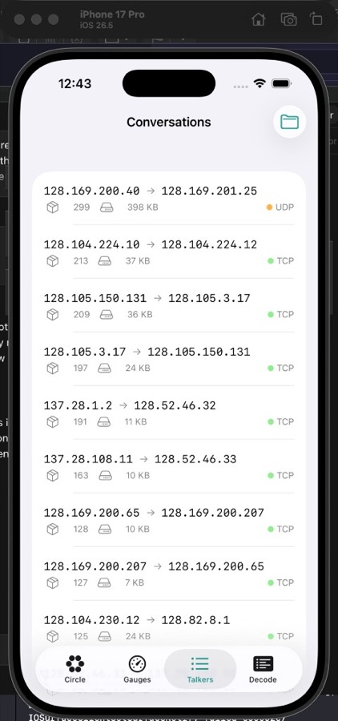
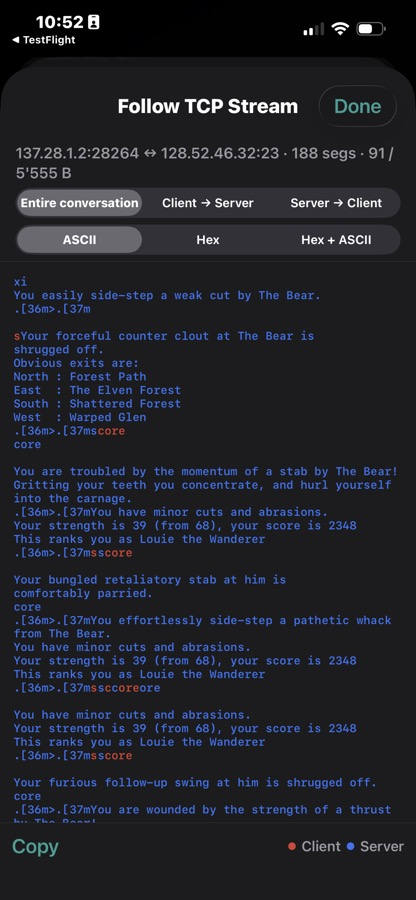

PacketCircle iOS: Quickstart
 PacketCircle iOS
PacketCircle iOS
Disclaimer: the iOS release is currently under review by the Apple App Store and should be available soon.
Screenshots



PacketCircle iOS is an offline analyzer for PCAP/PCAPNG files. It lets you open a capture, explore communication pairs, and (optionally) follow TCP streams.
Requirements
- iOS 17+ (runs on-device or Simulator)
- The iOS app does not support live capture (PCAP only)
1) Open a capture
- Open PacketCircle iOS.
- Import a
*.pcap or *.pcapng from Files / Share Sheet.
- The app loads the entire trace (no "partial vs replay" choices at import time).
- When loading completes, use the bottom status bar:
<file name> · <X pkts> · <Y pairs>
2) Explore communication pairs
- Circle: visual map of endpoints and communication pairs.
- Gauges: high-level traffic and protocol distribution.
- Conversations: table-style browsing and selection.
Tip: Use search to jump to an IP/prefix or a TCP port (for example TCP 443).
3) Replay original timing (optional)
The default open is "load full trace". To replay with original timing:
- Tap the bottom capture status bar.
- Confirm Replay.
4) Open session details
Select a pair to open Session Details.
- In Session Details focus = Sockets (TCP ports), you can pick a TCP socket (port) and TCP health follows that selection.
- In Conversation (IP pair), you see aggregated TCP health for the whole IP pair.
5) Follow TCP Stream (optional)
Use Follow TCP Stream to view a capped reassembly for a single direction (client -> server or server -> client).
If the stream feels slow or truncated, open Options (gear icon) and adjust Follow TCP Stream budget (KB).